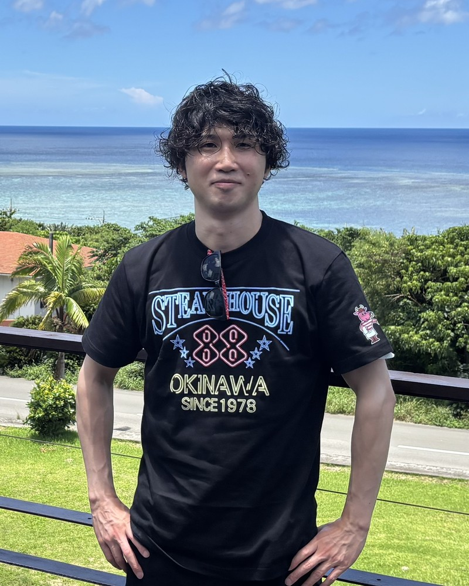

国立情報学研究所 情報学プリンシプル研究系 助教。JSTさきがけ研究員。専門は生物規範ロボティクス、制御工学、ナビゲーションアルゴリズム、ロボット嗅覚。
Assistant Professor, Principles of Informatics Research Division, National Institute of Informatics, and PRESTO Researcher, JST. Works on bio-inspired robotics, control engineering, navigation algorithms, and robotic olfaction.